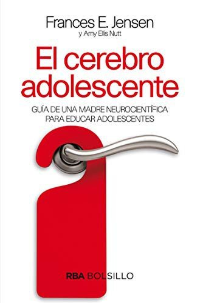
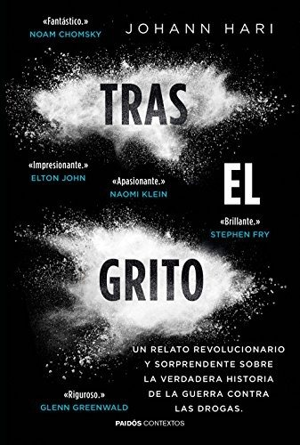
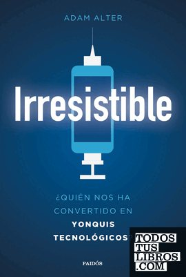

Libros de adicciones y conductas de riesgo
Libros de adicciones y conductas de riesgo en español: 12 libros completos para leer gratis aquí mismo y 4 fichas de títulos actuales.
Programas socioeducativos de prevención de conductas de riesgo y adicciones. Aproximación a los estándares de calidadIllanes Segura, Rocío; Helena Quintas
Programas socioeducativos de prevención de conductas de riesgo y adicciones. Aproximación a los estándares de calidadIllanes Segura, Rocío; Helena QuintasPrevención del trastorno por juego de azar con jóvenes y adolescentes en entorno escolar: El programa de “La contrapartida”Navas, J. F; Martín Pérez, C; Vadillo Nistal, Miguel Ángel; Perales, J. C
Prevención del trastorno por juego de azar con jóvenes y adolescentes en entorno escolar: El programa de “La contrapartida”Navas, J. F; Martín Pérez, C; Vadillo Nistal, Miguel Ángel; Perales, J. CEl paquete técnico SAFER. Un mundo libre de los daños relacionados con el alcohol
El paquete técnico SAFER. Un mundo libre de los daños relacionados con el alcoholHerramientas para aplicar las intervenciones breves de las 5A y las 5R para tratar el consumo de tabaco a nivel de la atención primaria
Herramientas para aplicar las intervenciones breves de las 5A y las 5R para tratar el consumo de tabaco a nivel de la atención primariaLuciana. «Dios, si me sacas de las adicciones, yo te voy a seguir todos los días de mi vida»Lecaros, Véronique
Luciana. «Dios, si me sacas de las adicciones, yo te voy a seguir todos los días de mi vida»Lecaros, VéroniqueLa pulsión de muerte y el juego en el psicoanálisis de niñosZelaya P., Carmen Rosa
La pulsión de muerte y el juego en el psicoanálisis de niñosZelaya P., Carmen RosaEl consumo de alcohol en adolescentes zamoranosMerino Barragán, Vicente; Jiménez Gómez, Fernando; Sánchez Crespo, Guadalupe
El consumo de alcohol en adolescentes zamoranosMerino Barragán, Vicente; Jiménez Gómez, Fernando; Sánchez Crespo, GuadalupeDelincuencia y drogas : estudio de un grupo marginado y respuestas educativasVega Fuente, Amando; de la Garza, Fidel; Giralde, Aurora; Panchón i Iglesias, Carme; Mallor, José Antonio; Bárcena, Manuel
Delincuencia y drogas : estudio de un grupo marginado y respuestas educativasVega Fuente, Amando; de la Garza, Fidel; Giralde, Aurora; Panchón i Iglesias, Carme; Mallor, José Antonio; Bárcena, ManuelEl papel del educador en la prevención del abuso de las drogasVega Fuente, Amando; Mendoza Berjano, Ramón; Sagrera, I.
El papel del educador en la prevención del abuso de las drogasVega Fuente, Amando; Mendoza Berjano, Ramón; Sagrera, I.Abordaje clínico de las adicciones sin sustanciaRomero Velázquez, Miriam
Abordaje clínico de las adicciones sin sustanciaRomero Velázquez, MiriamLos adolescentes en el siglo XXI. Un enfoque psicosocialAdolfo Perinat Maceres, Antonio Corral, Edelmira Domènech Llaberia y otros
Los adolescentes en el siglo XXI. Un enfoque psicosocialAdolfo Perinat Maceres, Antonio Corral, Edelmira Domènech Llaberia y otrosLas plazas de juego para niños...Ernesto Nelson
Las plazas de juego para niños...Ernesto NelsonGeneración dopaminaAnna Lembke
Generación dopaminaAnna LembkeEl cerebro adolescenteFrances E. Jensen y Amy Ellis Nutt
El cerebro adolescenteFrances E. Jensen y Amy Ellis Nutt
Tras el gritoJohann Hari
Tras el gritoJohann Hari
IrresistibleAdam Alter
IrresistibleAdam Alter
Temas relacionados
¿Estás eligiendo carrera?
Haz gratis el test de orientación vocacional de AURZANE: intereses, aptitudes, autoconcepto y hábitos de estudio, con informe completo.